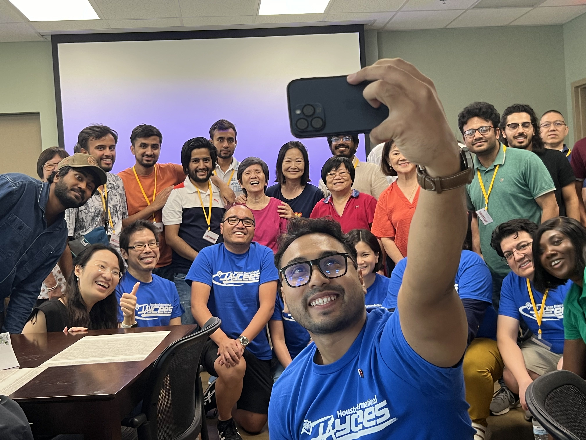
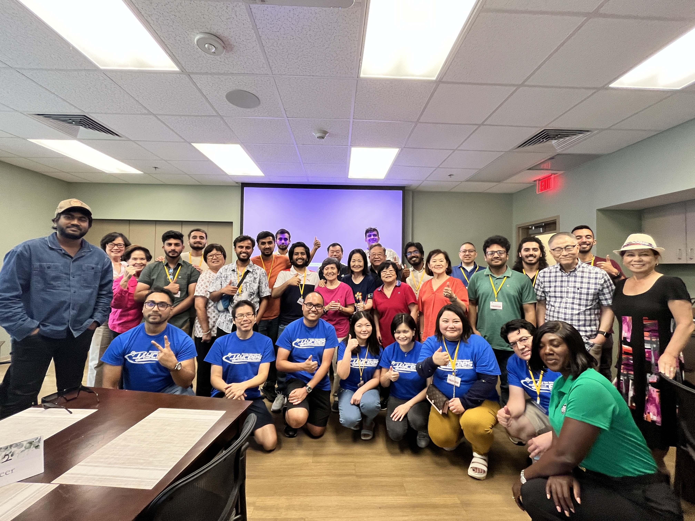
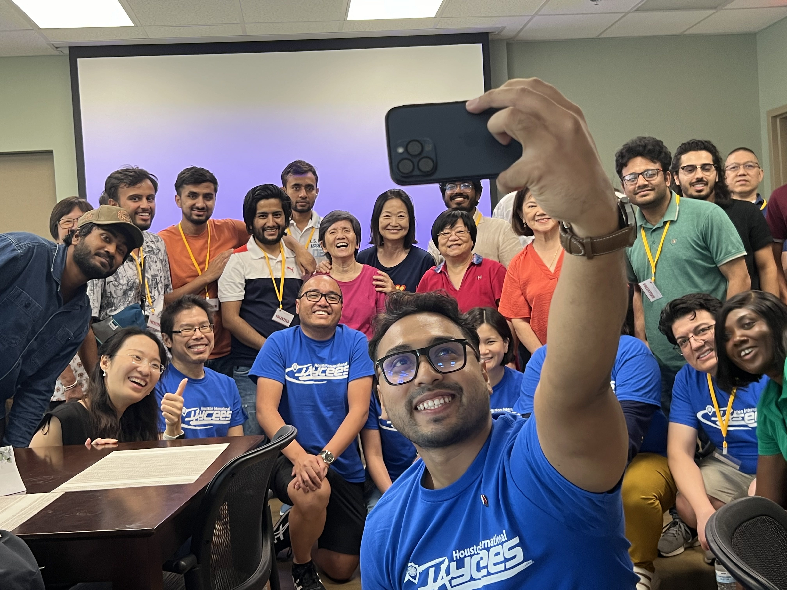
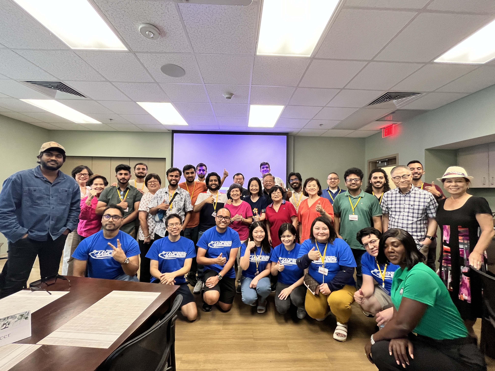

🇺🇸 2024 Houston Jaycees Senior Tech Training (Featured)
-
 



Project Lead: Nur Mohammad Ali | Team: 12 Volunteers
Location: Houston, Texas, USA | Date: 2024Led a full-day digital skills training for 32 American senior citizens (60+).
Taught ChatGPT, Facebook, Google Meet, Zoom so they can connect with loved ones.
- Friendly, hands-on learning
- One-on-one support
- Empowering seniors to use today’s technology confidently